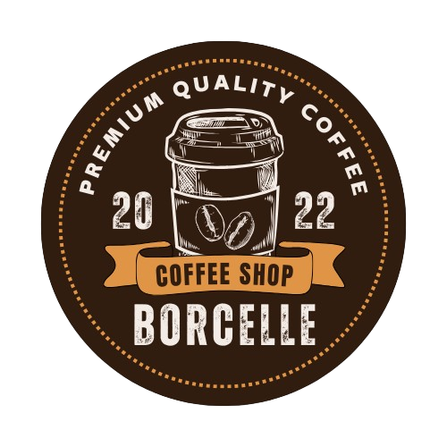

Home
About us
Menus
Contact
DRINKS
All day
BREAKFAST BITS
Sourdough or White Toast
with butter, homemade peanut butter, jam or marmite (Options: Gluten Free)
Porridge
with apples, cinnamon, dried cranberry, toasted pecans & honey (Options: Gluten Free, Vegan & DF)
Granola
with berry compote, fresh fruit & Greek yoghurt (Vegan & DF Option)
Acai Bowl
with fresh fruit, coconut flakes & granola (Gluten Free, DF & Vegan Option)
SOUP & SALADS
Chicken Salad
with avocado, gem, radish, pomegranates, tomato, & a delicious house dressing
House Salad
with baby gem, avo, tomato, radish, pomegranate, cranberries, spinach, dijon dressing & toasted pecans + Feta or Goat's Cheese
Soup of the Day
SANDWICHES
Smashed Avocado
on toasted sourdough sprinkled with pumpkin seeds, rocket, pomegranates and radish
Blythburgh Bacon Sandwich
with rocket, avocado & chili mayo
Red Leicester Cheese Toastie
with chili mayo & spring onion
Goats Cheese Toastie
with roasted tomato, chutney & rocket
Cheddar Ploughmans
with pickles, ham, cheddar, lettuce & mayo